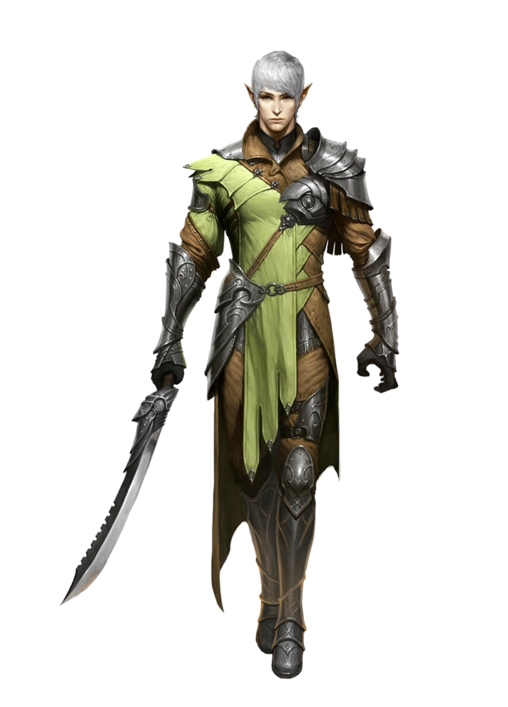

Одни сражаются ради славы, богатства или мести. Другие стремятся проявить себя, защитить других или просто умеют только драться. Третьи осваивают военное искусство, совершенствуя свое тело и дух в горниле войны. Истинные хозяева поля битвы, воины бывают очень разными. Они разбираются во всяком оружии, однако зачастую предпочитают какое-то одно, носят доспехи как вторую кожу, осваивают экзотические техники и изучают военное искусство, становясь живым оружием. Воины отнюдь не простые громилы: при помощи простейшего оружия они могут завоевывать королевства, одолевать чудовищ и менять ход битв. Солдаты, рыцари, охотники или бретеры - все они искусны в бою и способны одолеть любого врага.
Место воинов в гуще боя - они прекрасно умеют выживать и побеждать врагов. Им доступны самые разные тактики, и в прямом противостоянии с воинами мало кто сможет потягаться.
Мировоззрение: Любое.
КЗ:d10.
Стартовое богатство: 5d6 x 10 зм (175 зм в среднем).
Верховая езда (Лвк), Выживание (Мдр), Дрессировка (Хар), Запугивание (Хар), Знание (инженерное дело) (Инт), Знание (подземелья) (Инт), Лазание (Сил), Плавание (Сил), Профессия (Мдр), Ремесло (Инт)
Пункты навыков за уровень: 2 + модификатор Интеллекта.
| Ур | БМА | Стойкость | Реакция | Воля | Прочее |
|---|---|---|---|---|---|
| 1 | +1 | +2 | +0 | +0 | Дополнительная черта |
| 2 | +2 | +3 | +0 | +0 | Дополнительная черта, храбрость +1 |
| 3 | +3 | +3 | +1 | +1 | Мастерство ношения брони 1 |
| 4 | +4 | +4 | +1 | +1 | Дополнительная черта |
| 5 | +5 | +4 | +1 | +1 | Мастерство владения оружием 1 |
| 6 | +6/+1 | +5 | +2 | +2 | Дополнительная черта, храбрость +2 |
| 7 | +7/+2 | +5 | +2 | +2 | Мастерство ношения брони 2 |
| 8 | +8/+3 | +6 | +2 | +2 | Дополнительная черта |
| 9 | +9/+4 | +6 | +3 | +3 | Мастерство владения оружием 2 |
| 10 | +10/+5 | +7 | +3 | +3 | Дополнительная черта, храбрость +3 |
| 11 | +11/+6/+1 | +7 | +3 | +3 | Мастерство ношения брони 3 |
| 12 | +12/+7/+2 | +8 | +4 | +4 | Дополнительная черта |
| 13 | +13/+8/+3 | +8 | +4 | +4 | Мастерство владения оружием 3 |
| 14 | +14/+9/+4 | +9 | +4 | +4 | Дополнительная черта, храбрость +4 |
| 15 | +15/+10/+5 | +9 | +5 | +5 | Мастерство ношения брони 4 |
| 16 | +16/+11/+6/+1 | +10 | +5 | +5 | Дополнительная черта |
| 17 | +17/+12/+7/+2 | +10 | +5 | +5 | Мастерство владения оружием 4 |
| 18 | +18/+13/+8/+3 | +11 | +6 | +6 | Дополнительная черта, храбрость +5 |
| 19 | +19/+14/+9/+4 | +11 | +6 | +6 | Истинный мастер брони |
| 20 | +20/+15/+10/+5 | +12 | +6 | +6 | Дополнительная черта, истинный мастер оружия |
Ношение брони и обращение с оружием:Воин умеет обращаться со всем простым и особым оружием, использовать легкие, средние и тяжелые доспехи, а также щиты (включая башенные).
Дополнительная черта:На 1 уровне и далее на каждом четном воин получает дополнительную черту (вдобавок к тем, что получают все при повышении уровней). Это означает, что воин получает черты на каждом уровне. Дополнительные черты можно выбирать только из списка боевых - иногда они даже называются «дополнительными чертами воина».
Начиная с 4 и далее каждые четыре уровня после этого (на 8, 12 уровнях и т. д.) воин может заменить одну ранее взятую им дополнительную черту новой, потеряв при этом первую и получив вторую. Забытая черта не должна являться одним из требований к любой из имеющихся у воина черт, классовых способностей и т. д. Каждый раз воин может заменить только одну черту и решение о замене он принимает в тот момент, когда получает дополнительную черту на текущем уровне.
Храбрость (Экс):Начиная со 2 уровня воин получает бонус +1 к испытаниям Воли против ужаса. Этот Бонус возрастает на 1 за каждые четыре уровня выше 2.
Мастерство ношения брони (Экс):Начиная с 3 уровня воин осваивается с доспехами и становится подвижнее. Штраф за доспехи, которые он носит, снижается на 1 (до минимума 0), а максимальный положительный модификатор Ловкости увеличивается на 1. Эти бонусы возрастают на 1 каждые четыре уровня после 3 (на 7, 11 и 15 уровнях) до максимального уменьшения штрафа за доспехи на 4 и максимального увеличения модификатора Ловкости на 4. Кроме того, начиная с 3 уровня воин перемещается с обычной скоростью в средней броне, а с 7 уровня - в тяжелой.
Мастерство владения оружием (Экс):Начиная с 5 уровня воин может выбрать одну группу оружия из указанных ниже. Он получает +1 к атакам и урону любым оружием из этой группы.
Каждые четыре уровня (на 9, 13 и 17) воин выбирает еще одну группу оружия, получая +1 к атакам и урону соответствующим оружием. У всех его ранее выбранных групп оружия бонус увеличивается на +1. Например, воин 9 уровня получит +1 к атакам и урону одной группой оружия и +2 к другой, выбранной еще на 5 уровне. Если оружие входит в более чем одну группу, модификаторы для него не складываются (применяется наибольший).
Воин также добавляет вышеуказанные модификаторы ко всем боевым маневрам, которые совершает оружием из соответствующей группы, а также к своему ЗБМ от попыток разоружить персонажа или разрушить его оружие означенной группы.
Оружие делится на следующие группы (ведущий может добавить в них дополнительное оружие или создать новые группы):
Арбалеты: двойной арбалет, ручной арбалет, тяжелый арбалет, легкий арбалет, многозарядный ручной арбалет, многозарядный тяжелый арбалет, многозарядный легкий арбалет, стреляющая трубка, подводный легкий арбалет и подводный тяжелый арбалет.
Гибкое: копье, двусторонний цеп, двойная кама, цеп, летящее лезвие, тяжелый цеп, кусиригама, киокетсу шоге, метеоритный молот, моргенштерн, девятисекционный кнут, нунчаки, трехсекционный посох, скорпионий кнут, шипастая цепь, уруми и кнут.
Двустороннее: посох бо, цепное копье, двусторонний цеп, двойная катана-трость, двойная кама, дварфийский ургрош, гномий чекан, кусиригама, шеструм, двусторонний орочий топор, боевой посох, тайяха и двухклинковый меч.
Древковое: бердыш, бек де корбин, билл, глефа, глефа-гвизарма, гвизарма, алебарда, кавалерийская пика с крюком, конеруб, молот люцерна, захват, шеструм, огриный крюк, нагината, нодачи, рунка и тигровая лапа.
Естественное: безоружный удар и все естественное оружие вроде зубов, когтей, бивней, хвостов и крыльев.
Копья: аментум, кабанье копье, пилум, гарпун, кавалерийская пика, длинное копье, пилум, короткое копье, сибат, копье, тигровая лапа и трезубец.
Легкие клинки: штык, меч-бабочка, кинжал, собакорез, гладиус, хунга мунга, кама, керамбит, кукри, пата, квадренс, рапира, короткий меч, сика, серп, нож-звезда, меч трость, кинжал «разрушитель мечей» и вакидзаси.
Луки: длинный лук, композитный длинный лук, композитный короткий лук и короткий лук.
Метательное: аклыс, аментум, атлатль, духовая трубка, болас, бумеранг, чакрам, дубинка, кинжал, дротик, полуросличий посох-праща, гарпун, хунга мунга, пилум, лассо, кестрос, легкий молот, сеть, пилум, отравленная песочная трубка, веревочный дарт, короткое копье, сюрикен, сибат, праща, сеть с крюками, копье, нож-звезда, метательный топорик, метательный щит, трезубец и дротик вушу.
Молоты: аклыс, боевое кропило, дубинка, землелом, дубина, тяжелая булава, легкий молот, легкая булава, простая дубинка, тайяха, тэтсубо, вахаика и боевой молот.
Монашеское: посох бо, латунный кас6тет, меч-бабочка, цестус, дэн бонг, двойная кама, двойная куриная сабля, эмичи, боевой веер, ютт, кама, кусиригама, киокетсу шоге, лунчуанское тамо, шеструм, палаш, девять колец, девятисекционный кнут, нунчаки, боевой посох, веревочный дарт, сай, трехсекционный посох, меч семи хвостов, шанг гоу, сюрикен, сьянгам, тигровая лапа, тонфа, трехочный двусторонний меч, безоружный удар, уруми и дротик вушу.
Огнестрельное: все одноручное, двуручное и осадное огнестрельное.
Осадное: баллиста, бомбарда, катапульта, корвус, огнедышащий дракон, огненный змей, галерея, таран, осадная башня, спрингал, требушет и все другие осадные орудия.
Топоры: бердыш, боевой топор, дварфийская секира, двуручный топор, топорик, тяжелый клевец, ручной топор, легкий клевец, мотыга, двусторонний орочий топор, пата и метательный топорик.
Тычковое: шипы на доспехах, штык, латунный кастет, дэн бонг, эмичи, боевой веер, латная рукавица, тяжелый щит, железный гребешок, клар, легкий щит, маду, простая дубинка, тычковый кинжал, мягкая дубинка, шизорез, шипы на щите, шипованная латная рукавица, тэко-каги, тонфа, безоружный удар, деревянный кол и дротик вушу.
Тяжелые клинки: меч-бастард, чакрам, двойная куриная сабля, двойная катана-трость, эльфийская сабля, фальката, фальшион, большой тербут, двуручный меч, катана, хопеш, длинный меч, палаш, девять колец, нодачи, меч рока, пилообразная сабля, скимитар, коса, меч семи хвостов, шотель, храмовый меч, тербут и двухклинковый меч.
Истинный мастер брони (Экс):На 19 уровне у воина появляется СУ 5/-, когда он носит доспех или щит.
Истинный мастер оружия (Экс):На 20 уровне воин выбирает один тип оружия (например, двуручный топор, длинный лук или длинный меч). Все критические удары этим оружием автоматически подтверждаются, а их критический множитель увеличивается на 1 (x2 превращается в x3 и т. д.).
Кроме того, этот тип оружия невозможно выбить у него из рук.
Назад к списку классов